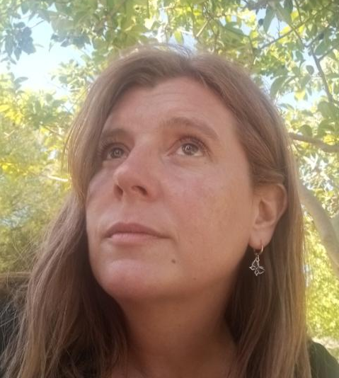

Mariela Peters
Poetisa y fotógrafa romántica y reflexiva, su obra se distingue por una emotividad profunda que exalta los valores humanos. A través de cuentos originales, invita a explorar la condición humana, tejiendo reflexiones que resuenan en el alma. Sus textos histórico-filosóficos asombran por su belleza y pasión, ofreciendo una mirada cautivadora sobre el pasado y la existencia. Con imágenes únicas y coloridas, captura la esencia de la vida, creando un puente entre el arte y nuestra propia humanidad. Su obra inspiradora nos invita a embarcarnos en un viaje introspectivo a través de la escritura y la fotografía.